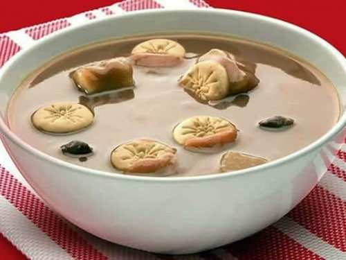

Habichuelas con Dulce

Description
It has always surprised us that of all our recipes, Habichuelas con Dulce is the most popular. This is a strange combination of ingredients for a dessert, but Dominicans love it!
For some foreigners, Habichuelas con Dulce might be the answer to the question "what's the most unusual sweet you've ever eaten?", but we Dominicans love it and never seem to have enough of it. This sweet cream of beans is an important part of our culinary DNA, and the flagship dish of the Dominican Lenten season.
Ingredients
- 4 cup boiled red kidney beans, (or cranberry or pinto beans)
- 6 cup water, from boiling the beans
- 2 cup coconut milk
- 3 cup evaporated milk
- ½ teaspoons salt
- 1 cup sugar (white, granulated)
- 1 teaspoons vanilla extract
- 2 cinnamon sticks
- 10 cloves
- ½ pound batata (sweet potato), [0.24 kg], cut into small cubes
- ½ cup raisins
To garnish
- 8 pieces casabe (cassava bread), (casabe), may be omitted
- 1 cup milk cookies
Steps
- Blending: Put the beans (and the water in which they boiled) in a blender and puree. Strain the beans to get rid of the skins and undissolved solids.
- Boiling: Pour the beans, coconut milk, evaporated milk, salt, sugar, vanilla, cinnamon, cloves, and sweet potatoes into a pot. Simmer over very low heat until the sweet potatoes are cooked through. Stir regularly to avoid sticking. Add the raisins and simmer for another 10 minutes (don't worry that it may look too thin, the cream of beans will get much thicker when chilled). Remove the cinnamon sticks (and cloves, if you like).
- Chilling: Remove from the heat and cool to room temperature. Chill before serving.
- Making casabe: Spread butter on the cassava bread and toast in the oven until it turns golden brown.
- Serving: Serve the beans with the cassava on the side. Put cookies in the beans when you serve.